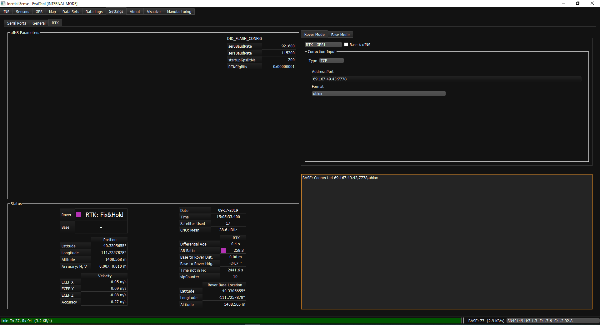
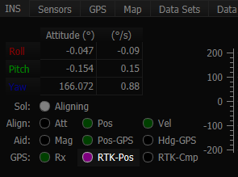
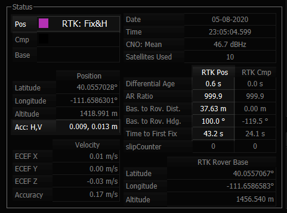

RTK Precision Positioning¶
Overview¶
Real Time Kinematic (RTK) is a precision satellite positioning technique which utilizes a base station to transmit position corrections to a receiver. The Inertial Sense RTK solution provides centimeter level position accuracy.
To use RTK, a base station, arover (receiver), and a method to send corrections from the base to the rover are required.
See the multi-band GNSS section for details on using our multi-frequency ZED-F9 GNSS system.
RTK Hardware Setup¶
Base Station Options¶
Any of the following devices can be used as a RTK base station. All Inertial Sense base station options require a GPS antenna.
- Inertial Sense µINS module, EVB 1 or Rugged - Sends corrections on either serial port or USB that can then be forwarded to a rover using a communication method of choice.
- 3rd Party Base Station - e.g. Emlid Reach Receiver.
- Public NTRIP Caster - e.g. CORS Network.
Rover Options¶
The following configurations can be used for the RTK rover:
- Inertial Sense Rugged - Can receive corrections via either serial port or USB.
Base to Rover Communication¶
- Direct Serial - Using USB, RS232, RS422/485, or TTL to pass corrections from Base to Rover.
- Radio Link - For example, Digi Xbee to send RTK corrections. Other communication methods such as Bluetooth may also work for the chosen application.
- NTRIP - Transmits RTK correction data over the Internet. To receive messages with NTRIP, the user must supply a URL, port number, and mount point . Often a username and password are also required.
- TCP/IP - A protocol for communicating directly between computers. In order to receive messages using TCP/IP, an address (IP Address or DNS) must be suppled to the Base where the corrections will be transmitted.
How to Know RTK is Working¶
Using the EvalTool¶
- Connect the µINS Rover to a computer with the EvalTool running. Open the comport for the unit in the Settings > Serial Ports.
- Navigate to Settings > RTK.
- Under the Status section, RTK functionality can be verified in 3 ways:
- Status field will show Single. Over the course of several minutes this status will change to Float then Fix.
- The Differential Age will show a timestamp that increments and resets back to zero about every second. This shows that the Rover is receiving Base messages.
- The Accuracy: H, V will show a large number at first. This number will decrease over time as the system acquires RTK Fix. Once in Fix, this number will average at +- 0.08, 0.14 m.

Using the CLTool¶
- Connect the µINS Rover to a computer with the CLTool running.
- Include the argument -msgPresetPPD in the CLTool command.
- Observe the DID_GPS_RTK_NAV message, Status: 0x******** (Single) over the course of several minutes this will change to (Float) then (Fix).
RTK Fix Status¶
LED Indicators¶
The LEDs on the IMX will indicate RTK fix status.
| LED Behavior | Status | Description |
|---|---|---|
| 3D Fix, RTK Float | Allows improved accuracy up to ~1m | |
 |
RTK Fix | Allows increased accuracy up to ~3cm |
RTK Positioning Valid Flags¶
The RTK precision positioning fix status can be identified using the valid bit in the INS and GPS status flags.
// INS status
INS_STATUS_NAV_FIX_STATUS(DID_INS_1.insStatus) == GPS_NAV_FIX_POSITIONING_RTK_FIX
// GPS status
DID_GPS1_POS.status & GPS_STATUS_FLAGS_GPS1_RTK_POSITION_VALID
RTK precision positioning fix is indicated is indicated when the RTK-Pos radio button turns purple in the EvalTool INS tab.

Progress and Accuracy¶
The ambiguity resolution ratio, arRatio, is a metric that indicates progress of the solution that ranges from 0 to 999. Typically values above 3 indicate RTK fix progress.
DID_GPS1_RTK_POS_REL.arRatio // Ambiguity resolution ratio
The DID_GPS1_RTK_POS_REL status can be monitored in the EvalTool GPS tab.

RTK Base Messages¶
The IMX RTK solution accepts both RTCM3 and uBlox raw GNSS base correction messages. See the RTK Base or NTRIP pages for details on using base stations.